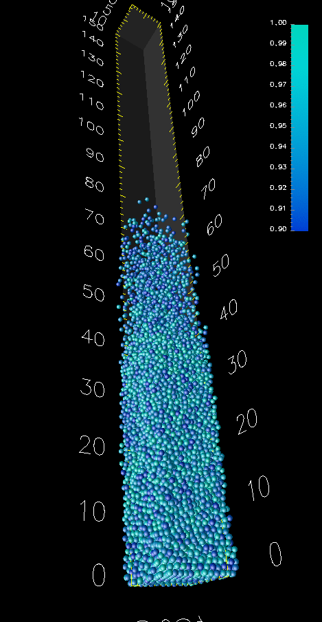
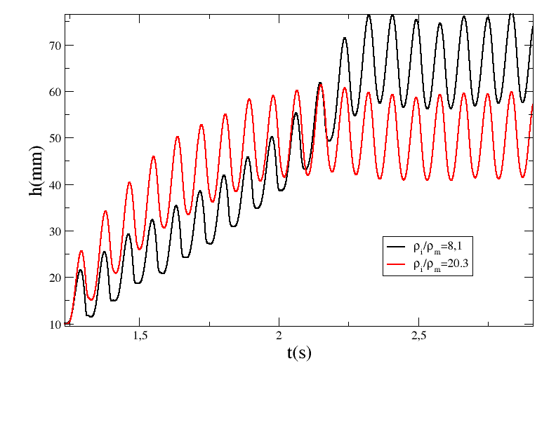
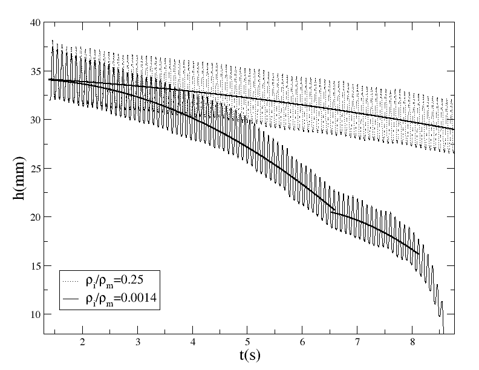
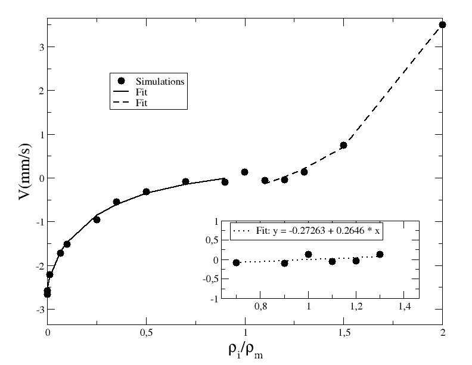
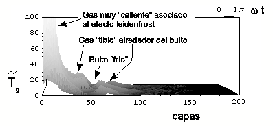
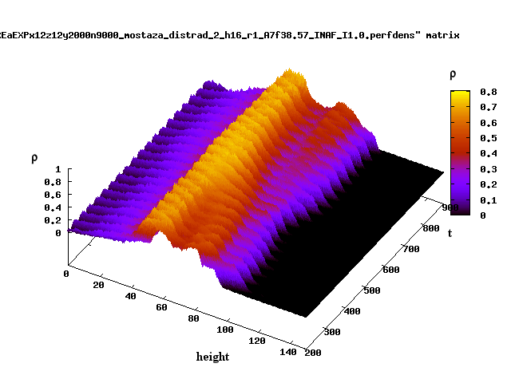
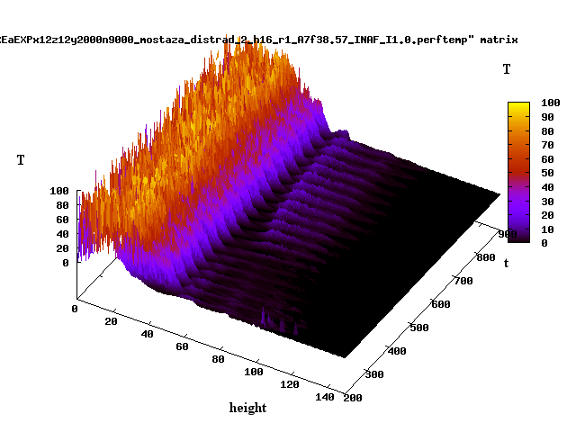
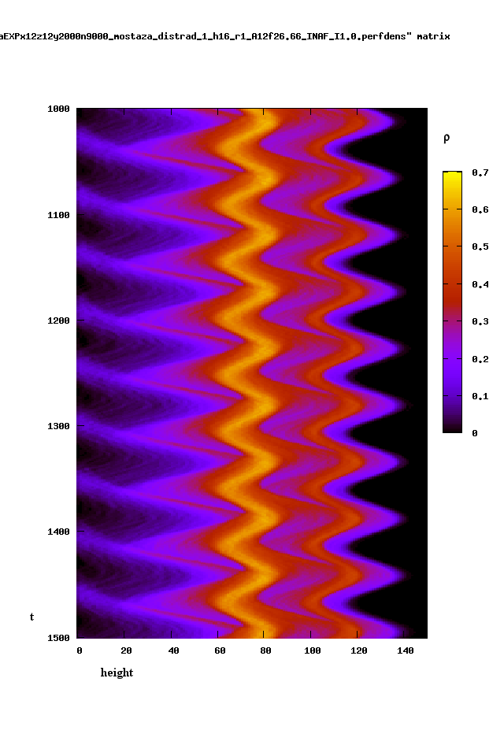

Reverse Buoyancy
A granular bed under vibration. We can see the gap in the bottom and a very disperse phase in the top: 
Grains falling to create the initial state for simulations:
The rising of a hevy intruder 4 times bigger than the grains:
The sinking of a light intruder 8 times bigger than the grains:
Two heavy intruders rising: 
Two light intruders sinking: 
Reverse Buoyancy effect: 
Granular Leidenfrost Effect
Granular temperature behavior in the granular leidenfrost effect: 
Granular temperature behavior in the granular leidenfrost effect (another angle):

Bed's volumetric density profile (low density bottom and high density first bubble). The second bubble is easy to see returning to the main bubble in t~400 and reappearing in t~700. It is always less denser than the main bubble. 
Granular temperature profile with the second bubble (Very hot bottom and cold first bubble. The second bubble is rather warm: 
Another example of the double bubble. 